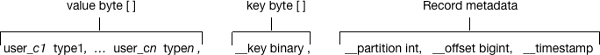

Querying Kafka data
You can get useful information, including Kafka record metadata from a table of Kafka data by using typical Hive queries.
Each Kafka record consists of a user payload key (
byte []) and value
(byte[]), plus the following metadata fields: - Partition int32
- Offset int64
- Timestamp int64
The Hive row represents the dual composition of Kafka data:
- The user payload serialized in the value byte array
- The metadata: key byte array, partition, offset, and timestamp fields

In the Hive representation of the Kafka record, the key byte array is called __key and is of type binary. You can cast __key at query time. Hive appends __key to the last column derived from value byte array, and appends the partition, offset, and timestamp to __key columns that are named accordingly.